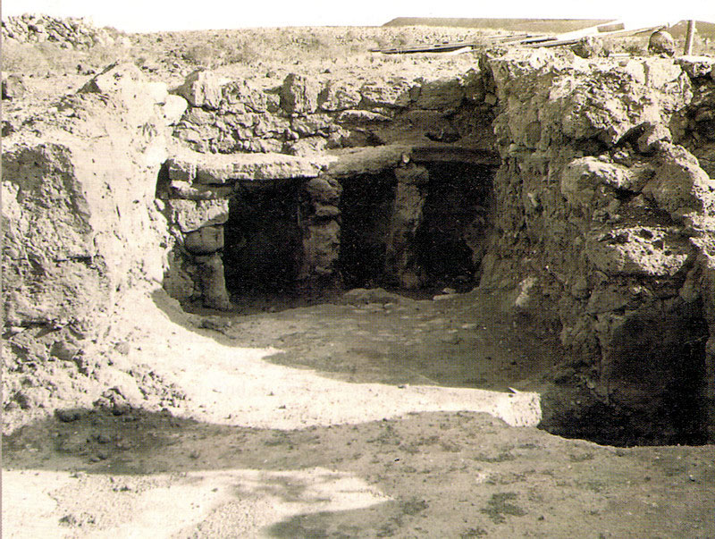

Història
La localització de Lanzarote és oriental, situada a 130 km de la costa d’Àfrica, a l'oceà Atlàntic. Lanzarote també es compon d'un petit arxipèlag anomenat '' l'arxipèlag Chinijo '' situat al nord i format per La Graciosa, Alegranza i Montaña Clara.
El gentilici de Lanzarote és de Lanzarote / a o bé Conill / a.
Hi ha diverses hipòtesis de com va sorgir el nom d'aquesta illa: Al segle XIII, un genovès anomenat Lancilotto va visitar l'illa, i molt probablement li va donar el nom de Lanzarote. Antonio de Nebrija, va creure que Lanzarote era una corrupció entre Llança-trencada a haver-se trencat la llança al conqueridor Joan de Bethencourt.
Suposa avui dia un problema a buscar la història de Lanzarote, bé sigui de la seva creació com dels seus primers habitants. Les seves causes son diverses:
La falta de troballes arqueològiques. Sembla que els seus habitants mai haguessin mort en la mateixa (almenys sense enterrar). Són escassos els enterraments prehistòrics.
Les erupcions volcàniques. Van arrasar habitatges, estris, '' pintures '', etc.
Els saquejos dels conqueridors. En conquistar les terres, van destruir gran part del que hi havia a l'entorn.
Els antics pobladors eren:
VESTIMENTA: Els homes anaven nus, a part una capa per darrere, fins als genolls, afegint que no se sentien avergonyits dels seus membres, i les dones vestien amb pells d'ovella com vestit, que arribava fins al terra. També era habitual vestir amb cuirs de cabra fins als genolls, i els homes portaven la barba de punta, el cabell llarg, i amb tres plomes llargues a la frontera. Les dones solien portar adorns com petxines de mar. El seu calçat era un tros de cuir de cabra embolicat en els seus peus.
HABITATGE: Les seves cases estaven fetes de pedra i es componien de tres sales petites i rodones, una d'elles a l'aire lliure.
En els començaments, els Fenicis cridaven a les Canàries '' Alizuth '' que significa plaer i alegria, després de l'arribada dels Grecs van denominar a les Canàries '' Elysius Parayso '' que significa terra voluptuosa. Molt aviat va començar a córrer el nom de Camps Elyseos, lloc on es deia que l'home passava una vida tranquil·la sense pluges ni neu.
